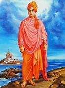

Swami Vivekananda
Jan 12 1863-1903
Santa SarvaBhauma
Swami Vivekananda[a] (12 January 1863 – 4 July 1902), born Narendranath Datta[b] was an Indian Hindu monk, philosopher, author, religious teacher, and the chief disciple of the Indian mystic Ramakrishna.[4][5] He was a key figure in the introduction of Vedanta and Yoga to the Western world.[6][7][8] He is credited with raising interfaith awareness and bringing Hinduism to the status of a major world religion in the late nineteenth century.
Biography
- Swami Vivekananda's inspiring personality was well known
- Swami Vivekananda's inspiring personality was well known
- Swami Vivekananda's inspiring personality was well known
- Swami Vivekananda's inspiring personality was well known